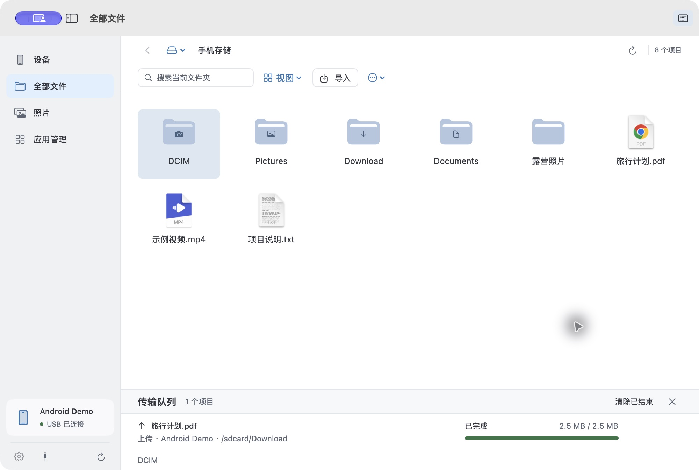
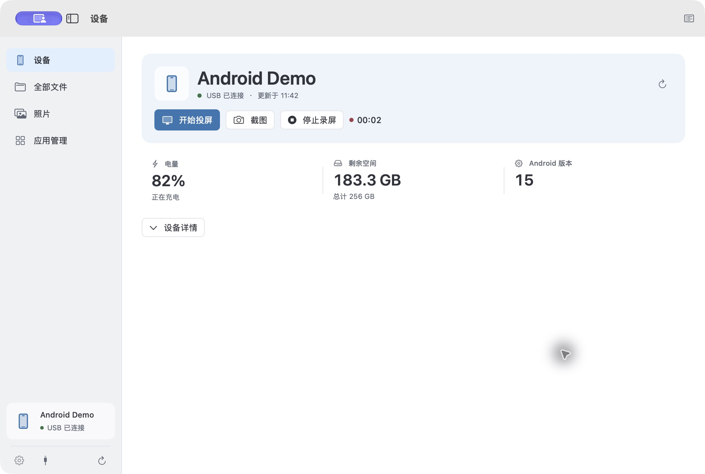
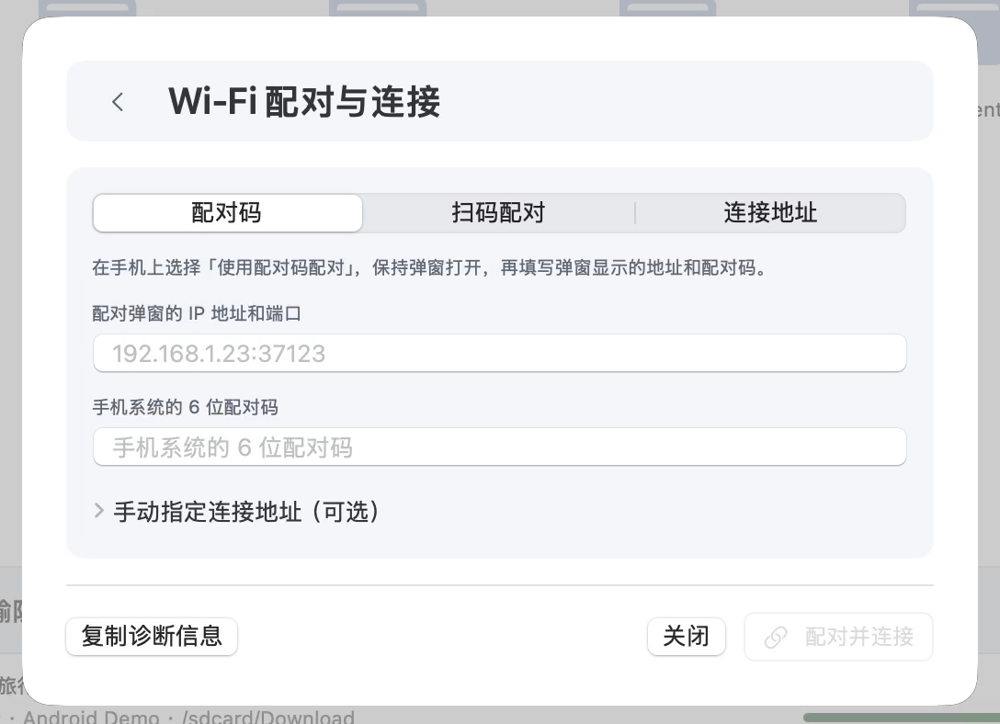

文件传输
从 Finder 拖入文件或文件夹。传输可暂停、继续，支持大文件断点续传和常用目录收藏。
原生 macOS 应用
通过 USB 或 Wi‑Fi 连接手机，在 Mac 上传输文件、浏览照片、管理应用，也能投屏、截图和录屏。
Apple 芯片 Mac（arm64）手机无需安装配套应用

从 Finder 拖入文件或文件夹。传输可暂停、继续，支持大文件断点续传和常用目录收藏。
按日期或相册浏览，搜索、预览照片和视频，选择项目批量导出原文件。
按名称或包名搜索，查看版本和大小，安装、启动、卸载或导出 APK。
在独立窗口查看手机屏幕。连接后也可以直接截图，或录制带计时的 MP4 视频。

电量、剩余存储和 Android 版本就在设备首页。开始录屏后，计时会显示在停止按钮旁，便于确认已录制多久。
安装包内置 ADB 和 scrcpy。准备一台 Apple 芯片 Mac 和一部 Android 手机即可。
.zip.sha256，放到同一目录。shasum -a 256 -c 文件名.zip.sha256，其中文件名使用实际下载的校验文件名。DroidHub.app 拖入「应用程序」。安装包未经 Apple 公证，macOS 首次打开时可能拦截。最低构建目标为 macOS 13，实机兼容性仍待验证。查看首次打开说明。
前往最新正式版USB 用支持数据传输的线连接手机，解锁后在开发者选项开启 USB 调试，并在手机上允许授权。
Wi‑Fi Android 11 或更新版本可开启无线调试。手机与 Mac 连同一 Wi‑Fi，在「连接设备 → 配对新设备」扫码或输入配对码。
